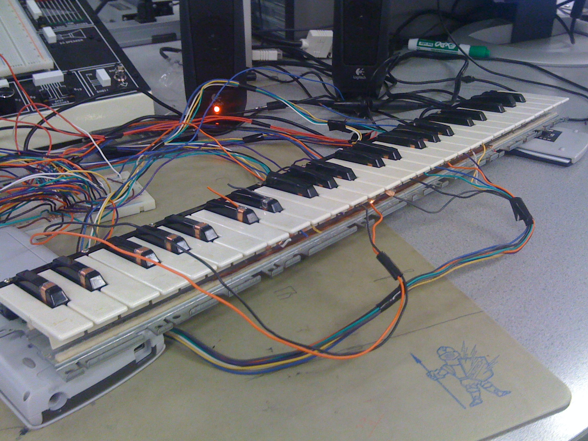
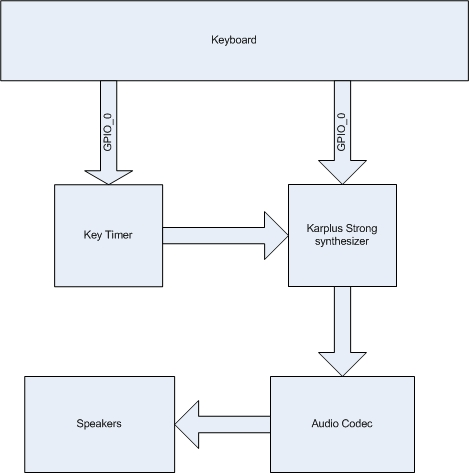
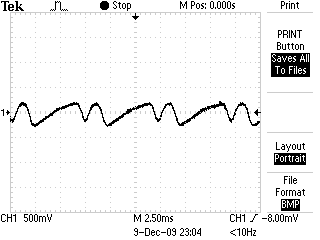
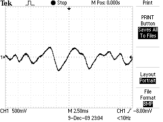

Introduction
Sound Bite
The KSD Keyboard is an FPGA based Karplus Strong string synthesis digital piano with velocity sensing keys.
Summary
Our project is a velocity sensitive hardware based piano. We simulated two strings per note using a Karplus Strong algorithm written in Verilog, and coupled it with a Casio electric piano keyboard fitted with custom switches to act as a user interface. On an Altera DE2 board we built a hardware Karplus-Strong synthesizer to simulate a piano key with two strings, along with a hardware timer. The timer was used to determine the key push's velocity, which in turn affected the volume level of the synthesized sound. The keyboard fed into the DE2 using the board's GPIO ports.
High Level Design
Rationale
Our project aimed to demonstrate the performance improvement of implementing Karplus-Strong in hardware on an FPGA versus in C on a microcontroller. The idea for the project came from the ECE576 course website and past experiences in ECE476 with Karplus-Strong on a microcontroller. We thought that many more strings could be implemented on an FPGA given the parallel nature of hardware design.
Background Math
The Karpus-Strong algorithm is a method of synthesizing sound by simulating the decay of a wave on a string. The KS algorithm starts with a random noise burst, which is the fourier transform of an impulse of energy. The noise burst is feed through a shift register and eventually added with a delayed version and low pass filtered (through simply averaging). The pitch of the note is related to the length of the shift register, equaling the sampling frequency over the length of the shift register.
Logical Structure
The piano is divided into two parts: the user interface and key detection, and the sound synthesis. The user interface accepts one or more key pushes as input, which the key detection hardware picks up. Key detection then forwards the relevant information to the sound synthesis portion, where the key sound is synthesized and forwarded to the audio codec on the DE2 board. The audio codec then outputs to the audio out port on the DE2 to a speaker.

Hardware/Software Tradeoffs
To achieve the level of parallel processing we required, using a Nios II and software was not possible. All keys had to be simulated concurrently, while a microprocessor/software solution would be forced to switch between keys due to its serial nature of processing. This left us with designing the project completely in hardware.
Relationship of Design to Standards
Our project does not make use of any standards.
Patent Discussion
The original Karplus-Strong algorithm is patented under US patent 4,649,783. The patent was filed in 1987 and expired in 2001. Regardless, our project is academic and does not have commercial applications or intentions, and thus should be safe from patent infringement. In a sense, Casio's keyboard was reverse-engineered because we disassembled and reused the keyboard, but we felt that no patents were violated in doing so due to the academic nature of the project, and that no proprietary technology was borrowed from the design (such as the sound synthesis).
Hardware Design
User interface and key capture
We chose to use the keyboard from an old Casio digital piano as our user interface. This most closely approximated playing a real piano as our time and budget constraints allowed. The keyboard detected two types of input on each key: the rest position when the key was not pressed, and the pressed position where the key was completely pushed down.
In the rest position, a copper strip on the key contacts a common copper strip connected to 3.3V. The key’s rest copper strip was connected to both a GPIO port and a 10K pull down resistor. When the key was pushed, the contact between these two broke. Another copper strip on the key contacted a different common copper strip when the key reached its full pushed position. The set up of this copper strip was identical to the rest position, but connected to a different GPIO port. A schematic of the switch is in the appendix section. A piece of foam was placed in between the mounting board and the keys' base in order to help them return to their rest position with more force.
This configuration of the keys allowed us to detect when the key was at rest, being pushed, and in transit between the two. These three pieces of information allowed us to find the time from the initial push of the key to the fully depressed state, which in turn corresponded to the force of the key push. This information was important for the sound synthesis portion of the project. To measure the time the key is in ‘transit’ between the two contacts, we used an Altera Megawizard function to create a hardware timer. The timer was a 50 MHz 26 bit, up only counter with synchronous reset and enable pins. The counters are set to count from the time the key breaks contact with the rest position to the time the down position makes contact. When the key is in the down position, the counter is disabled, but not cleared. The counter is only reset when the key makes contact again with the rest position. The count is outputted to our sound synthesis modules, where it is used in determination of the amplitude of the key strike.
Attempted Designs
The physical construction of the keyboard had several iterations before we found a design that worked. The keyboard came with a circuit in place to detect the push down of each key using a rubber strip under the keys contacting a mesh of conductive material on the board. When the key was pressed down, a conductive tip on the rubber closed the circuit between the material on the board. We attempted to adapt this board for our purposes by removing the components on the board and replacing them with wires to the GPIO ports, but the solder pads on the board were destroyed in the process. After deconstructing the keyboard, we found a suitable place for a similar design to the rest position contacts: a copper strip attached to each key contacting a common copper strip at Vcc.
The rest position contacts had a similar design throughout the project, but the method of attaching the copper strips to the plastic key stops required some experimentation. Initially we tried to use the adhesive that was already on the copper strip, but the stress of having wires attached to them was too much. We next tried hot glue to reinforce them, but this also proved not sufficiently strong, and added the problem of glue interfering with key operation. Super glue (specifically 'Krazy Glue') ended up being a good balance between strength and the amount of adhesive required.
We initially hoped that the keys possessed enough strength to make good contact with the rest position strip, but it turned out that the keys were returned to their up position only by the deflection of the plastic connection of the key to the plastic body. Due to the age of the piano, this force was not sufficient in making a good electrical connection. The foam at the base of each key was added to strengthen the rest position's connection.
Sound Synthesis
As explained above in the high level overview, our sound synthesis used the basic Karplus Strong algorithm with additional improvements and tweaks to move the generated sound from a guitar twang to a piano hammer strike. Each string was contained within its own module and feed it's pitch as an input allowing for easy replication and generation of new notes.
The first improvement to the KS algorithm was to simulate the hammer strike of a piano versus the twang of a guitar pluck, which the basic KS algorithm simulates. The hammer strike imparts an impulse of energy into the string, which is represented as random noise throughout the shift register. In contrast with a pluck, a hammer produces a softer more muted and smooth sound which is accomplished through initial filtering of the random noise. In addition the travelling sound wave has the opportunity to interact with the hammer multiple times as the wave returns before the hammer leaves the strings. This was accomplished in simulation by low pass filtering a delayed version of the original delayed sample and summing with the current sample. For really good quality three hammer string interactions are considered appropriate, however our choice of two was more than adequate.
The next improvement was to simulate multiple strings per note. In a real piano, some notes can have up to 3 separate strings which enriches the sound and is more pleasing to hear. We implemented multiple strings with slightly different lengths (+/- 1 from the note length) to simulate the slight variations same note strings experience.
In our system, two strings were used to simulate each note. In a real piano, these strings are in close proximity, and thus each string's vibrations affects the other. To simulate this effect, we attempted to couple the feedback loop of both strings after the filter and gain stages. The output of both strings were shifted right by 3 (divided by 8) and added to the main line of the other string which would then be stored. Unfortunately, for some unknown reason coupling results in breaking the system and no sound is played at all. Fortunately non coupled strings still improve the sound over a single string.
As mentioned above in the user interface, velocity sensing was implemented by measuring the time between starting and ending a key hit. The short the time the faster the key was struck, which would represent a harder hammer hit and thus louder sound. We were able to successfully implement this for a single key by determing a region of time and appropriately sign shifting down the inputted random noise which represents removing energy.
Final considerations for the sound synthesis were the multiple decay lengths. As with a real piano, holding down a piano key makes the time decay much longer as the dampers in the piano are lifted off the string. We can check for a key being held down as well as the press of a button (representing the sustain pedal on a piano) and feed the appropriate decay constant to the string modules. We also used M4K blocks to store data for our shift registers. We decided to run the M4K blocks at 3 times the speed of our update scheme to ensure speedy reading and writing.
DifficultiesWhile working with a single key was a fairly simple affair, once we extended our project to all 18 keys we barely managed to pass timing tests which results in a very touchy system. We often tried changing minor qualities of the project (such as the pitch of a note) and the system would break as a result. We eventually settled on a design that worked, that despite failing strict timing still managed to work on the FPGA.
Results
User interface and key capture
The keyboard performed mostly as expected, with some exceptions. The "rest" position proved to be unreliable on some keys because they had difficulty bouncing back. This requires that to ‘end’ a key press the key had to be manually lifted up to close the switch. Using stiffer foam or replacing the foam with a spring may have alleviated this problem. The mechanical action of most keys worked well, and provided a more authentic feel for playing a piano than some other alternatives, such as the DE2's push buttons. The interface also had the advantage of providing a mapping of notes that was familiar to users who have played a piano before. Other students in lab came up to the keyboard and played songs with no instruction, demonstrating the ease of use of the interface.
Sound Synthesis
Once we settled on a configuration that worked, sound synthesis was surprisingly good. Hits were quickly detected, producing the notes sound immediately. In addition, to the parallel nature of the FPGA, all keys can be played simultaneously and without overflow. This allows users to play chords just as well as single notes. While there was almost no hesitation in playing there were some discrepencies on expected frequency and generated frequency. This was a result of unanticipated changes to sampling rate, most likely due to the heavy stress we place on the clock signals. Although our piano's notes were out of tune with a real life piano, the KSD Piano was in tune with itself; a note higher on the piano was indeed a semitone higher in frequency.
|

|
|

|
Safety Considerations
Our keyboard had several exposed wires and copper contacts on the top of the black keys of the keyboard, directly where a user would press the key when using the piano. In addition to the risk of shock, the wires were soldered to the copper pads, exposing the user to solder. To combat these safety risks, we covered the pad and exposed wire with electrical tape. The tape serves as an insulator from the wire and a barrier between the user and solder.
Interference
To our knowledge our design did not cause interference with other group's projects. Our only output was an audio signal that was directly wired to a set of speakers. No radio or other wireless signals were broadcasted by any part of our product. To reduce interfering with other groups comfort or ability to concentrate, we kept the volume of the speakers on low when testing.
Usability
Usability was extremely intuitive. Our design exactly models a normal piano allowing anyone to simply sit down and play a few notes. More experienced players were even able to play simple tunes that fit within our key range. The only minor detail affect usability was the high resistance on a key or two which forced an adjacent key to play in addition itself.
Conclusions
Our Expectations
Our project met most of our expectations. For the physical keyboard implementation, adapting the Casio keyboard proved to be more of a challenge than we thought. A keyboard with larger keys may have been easier to work with, as the Casio keyboard did not provide much space to attach our copper strips for the contacts. We were still very grateful for the donation of the keyboard, as purchasing a keyboard for the purpose of disassembling it would have been a waste of money and a keyboard.
The design of the "down position" switches worked well, and provided a reasonably reliable indicator of a completed key push. The "up position" that we tried to detect when a key was at rest was more troublesome. The forces pushing the key to return to its rest position were insufficient for our purposes, and even with our modifications continued to be a source of problems in detecting the rest position of some keys. We dealt with the remaining problems after adding foam under the keys by simply manually returning keys to their rest position if they did not do so on their own. For demonstrating the project's idea of parallel Karplus-Strong synthesizers, this was acceptable. If the project was expanded to be more oriented toward playing real songs and simulating a piano as closely as possible, a more elegant solution should be sought.
Next time we would design a more exacting standard module and template and verify correct operation of SRAM. The weird bugs that prevented us from implementing some features for all keys were extremely frustrating, but were most likely the result of fully using resources on the board forcing very exacting timing requirements. We would approach the project with a more efficient design, possibly implementing some sharing mechanism in order pass timing and produce a more resilient circuit.
IP Considerations
Our code was based on several examples available on the course website. These code examples were made freely available for use in the course projects, so we violated no patents or copyrights by basing our own code off of them. The Karplus-Strong algorithm itself was protected by a patent, but the patent has since expired. We also used several Altera Megawizard functions, which are protected Altera intellectual property. The Quartus II subscription edition we used for the course include in the license the right to use these Megawizard functions in academic projects. However, we have not posted the source code for these Megawizard functions in accordance with the licensing agreement with Altera. The project did not introduce any novel approaches or designs, and thus represents no real patent opportunities.
Appendix A: Code
Top level Verilog moduleKarplus-Strong module
Appendix B: Schematic and pictures
Appendix C: Work Split
Chris McNally:
Major physical hardware modifications
Whiteboarding
Glue code to connect modules in top level
Joe Kerekes:
Karplus Strong code
Timer code
Minor physical hardware modifications
References Used
Elementary Digital Waveguide Models for Vibrating Strings
Piano Digital Synthesis
ECE 5720 Website
The Acoustics of the Piano
Frequency Table Maker
Altera Data Sheets and Design Documents
Acknowledgements
Thank you Bruce Land and Adam Shapiro for your astute advice and guidance during this project. It was a fun and interesting semester. In addition we would like to thank Hickey's Music Center for donating an old keyboard for our use. Thanks for the help!